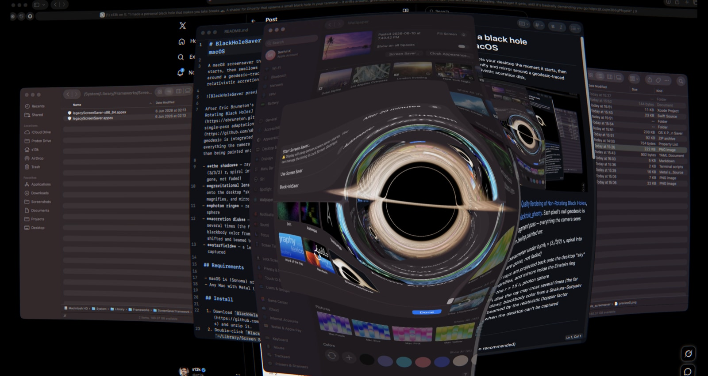

你的桌面掉进了黑洞——macOS 黑洞引力透镜屏保
Fork 自 s0xDk/blackhole_screensaver_macos
⬇ 下载 BlackHoleSaver
史瓦西半径内的光线坠入视界，窗口真的被吞噬了
桌面在爱因斯坦环内弯曲、放大、镜像，实时数值积分
Shakura–Sunyaev 温度分布，相对论多普勒频移与束流增强
没有录屏权限时显示透镜星空，同样震撼
| macOS 版本 | 状态 | 录屏权限宿主 |
|---|---|---|
| macOS 27 | ✅ 已测试 | WallpaperAgent.app |
| macOS 15 Sequoia | ✅ 兼容 | legacyScreenSaver.appex |
| macOS 14 Sonoma | ✅ 最低要求 | legacyScreenSaver.appex |
需要 Apple Silicon（M 系列芯片）推荐，Intel Mac 也可运行但性能较低。
BlackHoleSaver.saver.zip 并解压BlackHoleSaver.saver 安装| 预设名 | 特点 |
|---|---|
| 🔥 炼狱 | 默认，炽热吸积盘 + 强引力透镜 |
| 🪐 卡冈图雅 | 温和色调，类似《星际穿越》风格 |
| 🍩 M87* 甜甜圈 | 低倾角，类似 EHT 拍摄的 M87* 黑洞 |
| ✨ 类星体 | 高温蓝色吸积盘，强烈多普勒束流 |
| 🔵 耀变体 | 极端温度，最强相对论效应 |
| 🔬 纯透镜 | 无吸积盘，纯引力透镜 + 星空 |
| 🧘 禅意 | 低对比度柔和吸积盘，安静优雅 |